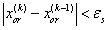

| 4.3.1. Regula-Falsi Yönteminin Algoritmasını
Kök bu şekilde hesaplandıktan sonra aynen yarılama yönteminde olduğu gibi işlemlere devam edilir.
O halde Regula-falsi yönteminin algoritmasını şu şekilde ifade edebiliriz:
a) Fonksiyon için bir kök araştırması yapılarak aralık belirlenir. Bu aralık, [xa,xü] biçimindedir.
b) Kök (4.4) formülü ile hesaplanır.
c) f(xa) f(xr) hesaplanır.
i) Eğer f(xa) f(xr) < 0 ise kök xa ile xor arasındadır. Bu durumda,
xa=xa
xü=xr
ii) Eğer f(xa) f(xr) > 0 ise kök xa ile xr arasındadır. Bu durumda,
xa=xr
xü=xü
yazılır.
iii) Eğer f(xa) f(xr) = 0 ise xr aranan köktür. Bu durumda iterasyon sona erecektir.
d) İterasyonlara son vermek için k iterasyonunda,

koşulu sınanır. Bu koşul gerçekleştiği takdirde iterasyonlara son verilir. Aksi durumda 2. adıma dönülerek işlemler tekrarlanır.
|